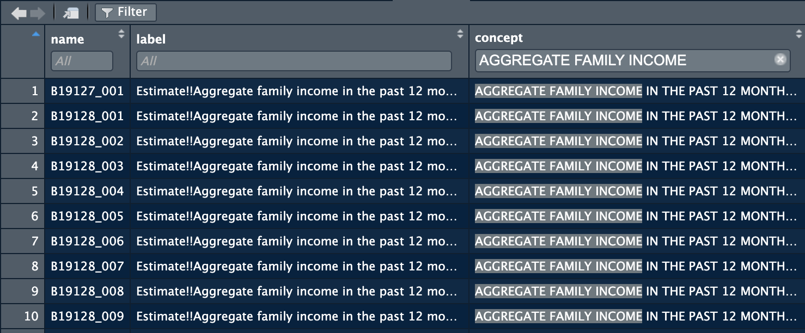

2 Data
This chapter explains how to deal with different types of data within R, as well as how to clean, manipulate, and save data. When we are dealing with data we will be using the object of a data frame to save the data within the temporary memory of R itself (shown in the environment). This chapter uses the packages dplyr, forcats, tibble, readr, and lubridate, which are all contained within the tidyverse. Additional packages outside of the tidyverse and mentioned as they are used. The installation and calling of the tidyverse is demonstrated in the code chunk below:
## ── Attaching core tidyverse packages ──────────────────────────────────────────────────────── tidyverse 2.0.0 ──
## ✔ dplyr 1.1.1 ✔ readr 2.1.4
## ✔ forcats 1.0.0 ✔ stringr 1.5.0
## ✔ ggplot2 3.4.2 ✔ tibble 3.2.1
## ✔ lubridate 1.9.2 ✔ tidyr 1.3.0
## ✔ purrr 1.0.1
## ── Conflicts ────────────────────────────────────────────────────────────────────────── tidyverse_conflicts() ──
## ✖ dplyr::filter() masks stats::filter()
## ✖ dplyr::lag() masks stats::lag()
## ℹ Use the conflicted package (<http://conflicted.r-lib.org/>) to force all conflicts to become errorsThe output from calling the tidyverse shows all of the different packages it loads into R at once and their most recent version. The core packages comprise a powerful suite of tools for importing, wrangling, and visualizing data.
2.1 Data Frames
Within R itself, a typed data frame can be created in two different ways: using the tibble() or tribble() functions. Both functions do exactly the same thing using different syntax. The tibble() function uses the format row = c(), row2 = c(). The tribble() function uses a vertical format, with ~ denoting the row names. An example of how to the tibble() function is given in the code chunk below:
# the tibble function joins either manually set or referenced vectors of the same length into a data frame
(data_frame <- tibble(row = c(1,2,3,4,5,6,7,8,9,10), # row_name = vector(length 10)
color = c('red', 'blue', 'yellow', 'green', 'purple', 'orange', 'magenta', 'red', 'purple', 'orange'),
category = c('warm', 'cold', 'warm', 'cold', 'cold', 'warm', 'warm', 'warm', 'cold', 'warm'),
boolean = c(TRUE, TRUE, FALSE, TRUE, FALSE, TRUE, FALSE, FALSE, TRUE, TRUE))) ## # A tibble: 10 × 4
## row color category boolean
## <dbl> <chr> <chr> <lgl>
## 1 1 red warm TRUE
## 2 2 blue cold TRUE
## 3 3 yellow warm FALSE
## 4 4 green cold TRUE
## 5 5 purple cold FALSE
## 6 6 orange warm TRUE
## 7 7 magenta warm FALSE
## 8 8 red warm FALSE
## 9 9 purple cold TRUE
## 10 10 orange warm TRUEUnderneath the row name in <> is the data type of the column. <dbl> refers to double, <chr> refers to character, and <lgl> refers to logical. <dbl> is the standard data type for numbers and <chr> is the standard data type for text in R. <lgl> refers to a TRUE or FALSE value, usually called a Boolean in computer science. <int>, referring to integers, is another common data type. The rows must be the same length for the tibble() or tribble() function to run. Each row here has a length of 10. The function is surrounded in parentheses so the output prints. The code chunk below demonstrates how to use the tribble() function:
# the tribble identifies the column name on the first line with the ~ symbol
(data_frame2 <- tribble(~row, ~row2,
1,2, #subsequent rows going across are inputted underneath
3,4,
5,6,
7,8 )) # this provides an alternative method to hand entering these ## # A tibble: 4 × 2
## row row2
## <dbl> <dbl>
## 1 1 2
## 2 3 4
## 3 5 6
## 4 7 8It is important to make sure each column is the intended data type. Functions (especially mathematical ones) often require a certain data type as an input.
2.1.1 Date Time Objects
There is a special data type for dates and times available through the lubridate package. This package is automatically included in the tidyverse. There are three different data types associated with dates/times: a date data type signifying the day, month, and year (<date>); a time data type signifying the time within a day (<time>); and a date time which includes both (<dttm>). The code chunk below demonstrates how to use the make_datetime() function to create date time objects. Using this data type ensures that graphs over time are produced properly using ggplot2.
## [1] "2020-11-25 UTC"Often, one of the hardest parts of working with a new data set is correctly changing however they keep the date/time into a date time object. The lubridate package is able to create these objects with a variety of input formats, making this process much easier. The code chunk below demonstrates different methods of creating <dttm> objects. This is done through the parse_date_time(x, orders) function. The orders argument tells the function what format your date is in. A full list of different possible orders is available in the documentation for the function.
## [1] "2017-01-02 UTC"## [1] "2017-01-02 UTC"# can specify a time zone as well
parse_date_time("2 Jan 2017 10:00:00 PM", orders = "dmy_HMS") #year month day_hour minute second## [1] "2017-01-02 10:00:00 UTC"One of the other really useful parts of lubridate date/time objects is the ability to refer to different components of a date time object. If you have a complete date time object, year(date_time) returns the year, month(date_time) returns the month, mday(date_time) returns the day of the month, wday(date_time) returns the day of the week, and the same for hour(date_time), minute(date_time), and second(date_time). This will be used further in Chapter 3 in conjunction with visualizing time series.
## [1] "2023-07-28 12:10:51 EDT"## [1] 2023## [1] 7## [1] 28## [1] 6## [1] Fri
## Levels: Sun < Mon < Tue < Wed < Thu < Fri < Sat## [1] 12## [1] 10## [1] 51.14917For more in-depth information and examples concerning lubridate refer to the Dates and Times chapter of R for Data Science.24 Additionally, looking at the documentation of the package is always helpful.
2.1.2 Factors
Factors are a specialized data type meant to deal with ordered categorical variables. Factors are available as part of the forcats package. This data type best applies to a character variable that has a specified order, such as months in a year.25 To convert a simple string variable into a factor you must use the factor() function. The code chunk below shows an example of converting a character vector to a factor. The difference can be seen when the factor and character vectors are sorted. Factors are most useful within data frames. They give R a roadmap of how to value categorical variables properly, making graphing, filtering, and general analysis easier.
mon <- c("Mar", "Apr", "Dec", "Feb", "Nov", "Jun", "Aug", "Jan", "Oct", "May", "Jul", "Sep")
factor <- factor(mon, levels = c("Jan", "Feb", "Mar", "Apr", "May", "Jun",
"Jul", "Aug", "Sep", "Oct", "Nov", "Dec"))
sort(mon) # this output does not have any ordering so it does not sort properly## [1] "Apr" "Aug" "Dec" "Feb" "Jan" "Jul" "Jun" "Mar" "May" "Nov" "Oct" "Sep"## [1] Jan Feb Mar Apr May Jun Jul Aug Sep Oct Nov Dec
## Levels: Jan Feb Mar Apr May Jun Jul Aug Sep Oct Nov DecFor a more in-depth explanation of factors, refer to Chapter 15: Factors of R for Data Science.26
2.1.3 Subsetting Data Frames
When working with data frames, such as data_frame2 above, you may not want to reference the entire data frame. Often it is useful to just reference a column or element from a data frame. There are two main ways to do this. A column can be referenced by the name of the column using the following format: data_frame$col_name. The result is a vector containing the elements in the specified column. This is demonstrated in the code chunk below using data_frame2.
## # A tibble: 4 × 2
## row row2
## <dbl> <dbl>
## 1 1 2
## 2 3 4
## 3 5 6
## 4 7 8## [1] 1 3 5 7While that is the simplest way to reference a column, it is also possible to reference a column or element within a column through its position. This can be done through the following general syntax: data_frame[[col_index]][[row_index]] or data_frame[col_index, row_index]. The syntax with the double brackets returns the element in its own data type, stripping it of its status as a data frame. Using the second syntax keeps its format as a tibble. The code chunk below demonstrates how to use both with data_frame2.
## # A tibble: 4 × 2
## row row2
## <dbl> <dbl>
## 1 1 2
## 2 3 4
## 3 5 6
## 4 7 8## [1] 1 3 5 7## [1] 1## # A tibble: 4 × 1
## row
## <dbl>
## 1 1
## 2 3
## 3 5
## 4 7## # A tibble: 1 × 1
## row
## <dbl>
## 1 12.1.4 Displaying Data Frames in Markdown
The default format for displaying data frames in a final output is very limited. As seen in the example below, it prints it in machine output and does not display all rows if the data frame is too big.
## # A tibble: 10 × 4
## row color category boolean
## <dbl> <chr> <chr> <lgl>
## 1 1 red warm TRUE
## 2 2 blue cold TRUE
## 3 3 yellow warm FALSE
## 4 4 green cold TRUE
## 5 5 purple cold FALSE
## 6 6 orange warm TRUE
## 7 7 magenta warm FALSE
## 8 8 red warm FALSE
## 9 9 purple cold TRUE
## 10 10 orange warm TRUETo create a more professional output for data frames, we use the gt() function from the gt package.
| row | color | category | boolean |
|---|---|---|---|
| 1 | red | warm | TRUE |
| 2 | blue | cold | TRUE |
| 3 | yellow | warm | FALSE |
| 4 | green | cold | TRUE |
| 5 | purple | cold | FALSE |
| 6 | orange | warm | TRUE |
| 7 | magenta | warm | FALSE |
| 8 | red | warm | FALSE |
| 9 | purple | cold | TRUE |
| 10 | orange | warm | TRUE |
The output is much more visually appealing and highly customizable. For example, the tab_header() function allows you to add a title and subtitle, as demonstrated below.
gt(data_frame) |> tab_header(title = "Data Title", subtitle = "More Information") # refer to piping operators| Data Title | |||
| More Information | |||
| row | color | category | boolean |
|---|---|---|---|
| 1 | red | warm | TRUE |
| 2 | blue | cold | TRUE |
| 3 | yellow | warm | FALSE |
| 4 | green | cold | TRUE |
| 5 | purple | cold | FALSE |
| 6 | orange | warm | TRUE |
| 7 | magenta | warm | FALSE |
| 8 | red | warm | FALSE |
| 9 | purple | cold | TRUE |
| 10 | orange | warm | TRUE |
For more information on how to further customize tables using the functions available in gt, refer to the documentation here. This package is structured similarly to ggplot2, so I recommend reading Chapter 3 and then exploring the customization options this package has to offer.
2.1.5 Reference Saved Values in Markdown
When creating a markdown document for final submission, you will have to submit statistics you generated through your analysis from saved data frames and discuss them within the text of your R markdown document. To avoid errors with copying numbers, I recommend referencing the saved values directly so R markdown exactly replicates them without error. This can be done through the syntax “r value_name” surrounded by backwards apostrophes. It is also possible to run functions within inline code: “r round(value_name, digits = 5)”. Refer to the bottom left of the first page of the R markdown cheat sheet for further explanation and examples.
2.2 Importing Data
Importing data is an important skill. Data comes in a variety of formats which you must transfer into a data frame format to use with R. One option is to hand-type the data into the tibble or tribble function, but this is very time consuming. It is only easiest to use these functions with small data sets or a data frame you want to display as a table.
2.2.1 .csv Files
Most often, data you encounter will be available in the .csv format (comma-separated-values). The readr package in the tidyverse provides the function, read_csv() for reading .csv files into a data frame. An example of how to use the read_csv() function is given in the chunk below:
## Rows: 156 Columns: 2
## ── Column specification ────────────────────────────────────────────────────────────────────────────────────────
## Delimiter: ","
## chr (1): Date
## dbl (1): Sales
##
## ℹ Use `spec()` to retrieve the full column specification for this data.
## ℹ Specify the column types or set `show_col_types = FALSE` to quiet this message.## # A tibble: 156 × 2
## Date Sales
## <chr> <dbl>
## 1 Jan-92 1519
## 2 Feb-92 1551
## 3 Mar-92 1606
## 4 Apr-92 1686
## 5 May-92 1834
## 6 Jun-92 1786
## 7 Jul-92 1924
## 8 Aug-92 1874
## 9 Sep-92 1781
## 10 Oct-92 1894
## # ℹ 146 more rowsThe sample.csv file is from Introduction to Time Series Analysis and Forecasting.27
2.2.2 Microsoft Excel Files
Excel has changed the way they save their files over time, leading to a variety of formats for excel files (e.g. .xls, .xlsx). Excel files can always be saved as .csv files within excel and then read as a .csv file into R. If you want to directly read the excel file, the readxl package offers the ability to read an excel file directly into a data frame through the read_excel(file_name) function. This function can read almost any form of excel file, regardless of what generation the file type is. The code chunk below shows an example of how to do this. Note: to just use the file name the file must be in the current working directory (by default this is the project folder).
## # A tibble: 156 × 2
## Date Sales
## <dttm> <dbl>
## 1 1992-01-01 00:00:00 1519
## 2 1992-02-01 00:00:00 1551
## 3 1992-03-01 00:00:00 1606
## 4 1992-04-01 00:00:00 1686
## 5 1992-05-01 00:00:00 1834
## 6 1992-06-01 00:00:00 1786
## 7 1992-07-01 00:00:00 1924
## 8 1992-08-01 00:00:00 1874
## 9 1992-09-01 00:00:00 1781
## 10 1992-10-01 00:00:00 1894
## # ℹ 146 more rowsIf the excel file has multiple sheets, the sheet = parameter allows you to select the sheet by setting it equal to the name of the sheet (make sure to put the name in quotes so it is a string). If the excel file has blank lines at the beginning of the file you can use the skip = parameter to skip lines before it starts to read it. This is often necessary to ensure the .csv file correctly reads into a data frame.
Excel has a very useful feature where it can read tables from pictures or screenshots of textbooks. This feature is found in the data tab of the top bar of excel and identified in the screenshot below. Simply select the file of a picture of the table and excel will try to import it. It isn’t perfect but often get most of it right. Always check the data for errors when using this, it still saves a ton of time.

2.2.3 RDS Files
.RDS files are meant for use in R and are a good way to save and read data frames. They quickly load into R and are the format I use to save my files when I call them in a separate R markdown document. The read_rds() function reads existing RDS files into a data frame.
2.2.4 Conclusion
Almost any data you encounter will be in either one of these three formats or able to be converted into one of these formats using methods discussed above. Getting a data file into a data frame is the first step in analyzing data and can sometimes be the most tedious if you are not able to troubleshoot the process effectively. Always check you data!
2.3 Saving Files
Saving data frames allows you to save a snapshot of the data as you are going through your analysis. This can be useful after cleaning data. Often you will not need all the data in a data set or will have to alter the data. In the next section, I discuss what clean data is and how to clean your data using the tools of the tidyverse. It is still important to preserve the original data as you received it for reference later on and to prevent deletion of data that you are unable to recover. By having the original file saved, you are always able to go back and retrace your steps from the original formatting to the clean data.
2.3.1 Saving Data Frames
Saving data frames can be very useful to reference your data set in the desired format, as well as for saving tables for display in your final document. I recommend saving data frames as RDS files, as they are the easiest for R to quickly read and allow you to display the results in whatever format you wish. In the code chunk below, I create a sample data frame called object and then use the saveRDS() function to save the file.
# This creates a sample data frame to save as an RDS file
object <- tibble(
a = c(1,2,3,4,5),
b = c('a', 'b', 'c', 'd', 'e')
)
saveRDS(object, file = "file_name.rds") # the first parameter is the object you want to save
# in the file name it is important to end it with .rds so the computer knows what type of file it isTo reload these files into R, or call them in another document, use the readRDS() as shown below:
## # A tibble: 5 × 2
## a b
## <dbl> <chr>
## 1 1 a
## 2 2 b
## 3 3 c
## 4 4 d
## 5 5 e2.3.2 Saving Other File Types
There are a variety of objects you may want to save in your code for later reference, either in a written work or another document. Saving visualizations as .png files will be covered in Chapter 3. For other types of objects that you may want to save, look on the internet for the best file type and function to use to save them. Always check that the saved file is as you intended it to be and that it can be read into the format you desire.
2.4 Cleaning Data and the Tidyverse
What is clean data? For data to be clean there must be a clear pattern of organization to how the data is stored. This concept is also commonly referred to as tidy data. There are three general rules for making a data set tidy:28
- Each variable must have its own column
- Each observation must have its own row
- Each value must have its own cell
Table 1, shown below, is an example of a tidy data set. Each observation (pertaining to a country and a year) has its own row. Additionally, each variable has its own column. This table is included in the tidyverse as an example and used in R for Data Science.29
## # A tibble: 6 × 4
## country year cases population
## <chr> <dbl> <dbl> <dbl>
## 1 Afghanistan 1999 745 19987071
## 2 Afghanistan 2000 2666 20595360
## 3 Brazil 1999 37737 172006362
## 4 Brazil 2000 80488 174504898
## 5 China 1999 212258 1272915272
## 6 China 2000 213766 1280428583Often, data when you receive it will not be in this format. The first step after successfully importing data is to clean it. The tidyverse offers functions that allow you to rearrange data frames into a format better suited for analysis and plotting. I will go through several examples of different common problems with data, and what functions are best to fix them.
2.4.1 Pivoting Data
First, we will discuss the two functions used for pivoting data. The code chunk below shows a sample data frame that has multiple issues. Instead of having a column for each variable, the variable “type” indicates the kind of value in that row. Columns 3 and 4, which both contain doubles, indicate the year of the values in those columns. These are examples of common problems with data organization.
## # A tibble: 6 × 4
## type country `1999` `2000`
## <chr> <chr> <dbl> <dbl>
## 1 population Afghanistan 19987071 20595360
## 2 cases Afghanistan 745 2666
## 3 population Brazil 172006362 174594898
## 4 cases Brazil 37737 80488
## 5 population China 1272915272 1280428583
## 6 cases China 212258 213766These two functions in dplyr each solve different problems:
pivot_longer()- this adds rows making the data frame longer
- this corrects the issue with the columns pertaining to the year of the corresponding value
- parameters:
pivot_longer(data, cols, names_to = "", values_to = "")- data: data frame to pivot
- cols: columns to pivot
- names_to: name of new column containing the column names of the pivoted columns
- values_to: name of new column containing the values of the pivoted columns
(longer_table <- pivot_longer(data = sample_table, cols = c(`1999`, `2000`), names_to = "year", values_to = "value"))## # A tibble: 12 × 4
## type country year value
## <chr> <chr> <chr> <dbl>
## 1 population Afghanistan 1999 19987071
## 2 population Afghanistan 2000 20595360
## 3 cases Afghanistan 1999 745
## 4 cases Afghanistan 2000 2666
## 5 population Brazil 1999 172006362
## 6 population Brazil 2000 174594898
## 7 cases Brazil 1999 37737
## 8 cases Brazil 2000 80488
## 9 population China 1999 1272915272
## 10 population China 2000 1280428583
## 11 cases China 1999 212258
## 12 cases China 2000 213766pivot_wider()- this adds columns making the data frame wider
- this corrects the issue that each variable does not have its own column
- parameters:
pivot_wider(data, names from = "", values_from = "")- data: data frame to pivot
- names_from: column whose values are the names of the new columns
- values_from: column whose values are the values of the new columns
# this pivots the data frame after the longer pivot above
pivot_wider(longer_table, names_from = type, values_from = value )## # A tibble: 6 × 4
## country year population cases
## <chr> <chr> <dbl> <dbl>
## 1 Afghanistan 1999 19987071 745
## 2 Afghanistan 2000 20595360 2666
## 3 Brazil 1999 172006362 37737
## 4 Brazil 2000 174594898 80488
## 5 China 1999 1272915272 212258
## 6 China 2000 1280428583 213766For more information and examples about pivoting refer to the Stanford Data Wrangling chapter on basic pivoting and the R for Data Science Chapter on tidy data.30 31
2.4.2 Creating New Variables
When working with data you will want to create new variables. These can be numeric variables that combine values already present in the data or categorical variables that differentiate the values in some way. The mutate() function is used to create a new variable using the following syntax: mutate(data, new_var = formula).
This first example, in the code chunk below, demonstrates how to make a new numeric variable using a formula consisting of two existing numeric variables. This creates a new column, cases_per_cap, that is the number of cases divided by the total population that year. The second new variable, ln_pop, demonstrates how to apply a function to an existing numeric variable to create a new variable. In this case the function is the natural log.
## # A tibble: 6 × 6
## country year cases population cases_per_cap ln_pop
## <chr> <dbl> <dbl> <dbl> <dbl> <dbl>
## 1 Afghanistan 1999 745 19987071 0.0000373 16.8
## 2 Afghanistan 2000 2666 20595360 0.000129 16.8
## 3 Brazil 1999 37737 172006362 0.000219 19.0
## 4 Brazil 2000 80488 174504898 0.000461 19.0
## 5 China 1999 212258 1272915272 0.000167 21.0
## 6 China 2000 213766 1280428583 0.000167 21.0# on the left side of the equal sign is the name of the new variables
# on the right side is the new variableYou can use vectors outside of the data frame to create new variables, but must be careful when doing so. The vector must be the same length as the data frame. It is important to note that the first element will belong to the observation in the first row. You must make sure that you are assigning values to the correct observation, otherwise your data will become corrupted. The code chunk below shows an example of using a vector to create a new variable in table 1.
new_var <- c(0.5, 2.1, 3.4, 0.3, 0.78, 1.64) # these values do not correspond to anything
mutate(table1, value = new_var) # the new var has a length of 6 so this works## # A tibble: 6 × 5
## country year cases population value
## <chr> <dbl> <dbl> <dbl> <dbl>
## 1 Afghanistan 1999 745 19987071 0.5
## 2 Afghanistan 2000 2666 20595360 2.1
## 3 Brazil 1999 37737 172006362 3.4
## 4 Brazil 2000 80488 174504898 0.3
## 5 China 1999 212258 1272915272 0.78
## 6 China 2000 213766 1280428583 1.64This next example demonstrates how to use the case_when() function. case_when() is very useful when creating a new categorical variable based on already existing numeric variables. This function does not have any explicit parameters. Instead, there can be any number of logical statements (e.g. cases / population < 0.0001) with a corresponding ~. ~ creates a formula in R. On the other side of the ~ is the value of the variable if the logical statement evaluates to TRUE. Make sure only one formula evaluates as TRUE for each observation. The code chunk below demonstrates the syntax for case_when().
(new_table <- mutate(table1, cases_per_cap = case_when(cases / population < 0.0001 ~ "low",
cases / population >= 0.0001 & cases / population < 0.0003 ~ "medium",
cases / population >= 0.0003 ~ "high")))## # A tibble: 6 × 5
## country year cases population cases_per_cap
## <chr> <dbl> <dbl> <dbl> <chr>
## 1 Afghanistan 1999 745 19987071 low
## 2 Afghanistan 2000 2666 20595360 medium
## 3 Brazil 1999 37737 172006362 medium
## 4 Brazil 2000 80488 174504898 high
## 5 China 1999 212258 1272915272 medium
## 6 China 2000 213766 1280428583 mediumThis example creates a new variable that designates the level of cases per capita as low, medium, or high. The new variable is a string instead of numeric. This variable is perfect for using the factor data type, as it has inherent ordered levels. The code chunk below demonstrates how to turn this variable into a factor. When using mutate, if you set something equal to a variable name already in use, it will overwrite that variable.
## # A tibble: 6 × 5
## country year cases population cases_per_cap
## <chr> <dbl> <dbl> <dbl> <fct>
## 1 Afghanistan 1999 745 19987071 low
## 2 Afghanistan 2000 2666 20595360 medium
## 3 Brazil 1999 37737 172006362 medium
## 4 Brazil 2000 80488 174504898 high
## 5 China 1999 212258 1272915272 medium
## 6 China 2000 213766 1280428583 medium2.4.3 Selecting Columns
In some cases, an imported data frame will have more variables than you need for your analysis. The select(data, cols) function allows you to choose columns to keep in a new data frame. The data parameter is the data frame to select columns from, and cols is the name of the columns to select. The code chunk below demonstrates how to use the select function using table1 as an example. select() is very useful when cleaning data as it allows you to easily discard data you do not need. You should always keep an original copy of the data as you received it in case you need to re-do your work. Save a modified data frame with a different name containing only the variables you need for analysis.
## # A tibble: 6 × 2
## country year
## <chr> <dbl>
## 1 Afghanistan 1999
## 2 Afghanistan 2000
## 3 Brazil 1999
## 4 Brazil 2000
## 5 China 1999
## 6 China 2000# the everything function allows you to move the selected columns to the front
# of the data frame, keeping all columns
select(table1, year, population, everything())## # A tibble: 6 × 4
## year population country cases
## <dbl> <dbl> <chr> <dbl>
## 1 1999 19987071 Afghanistan 745
## 2 2000 20595360 Afghanistan 2666
## 3 1999 172006362 Brazil 37737
## 4 2000 174504898 Brazil 80488
## 5 1999 1272915272 China 212258
## 6 2000 1280428583 China 2137662.4.4 Renaming Variables and Piping
It is very important to make sure the names of the columns comply with the naming conventions of coding discussed in Section 2.1 and clearly indicate the variable to someone else. Most data sets have a code book that lists each variable and what it represents, but these names sometimes do not effectively identify the variable without having to refer to the code book. To rename the columns in a data frame use the rename() function available with the tidyverse. The code chunk below demonstrates this using table1.
## # A tibble: 6 × 4
## nation year cases population
## <chr> <dbl> <dbl> <dbl>
## 1 Afghanistan 1999 745 19987071
## 2 Afghanistan 2000 2666 20595360
## 3 Brazil 1999 37737 172006362
## 4 Brazil 2000 80488 174504898
## 5 China 1999 212258 1272915272
## 6 China 2000 213766 1280428583# the name you want to change the column to is on the left of the equal sign
# the current name of the column is on the right of the equal signPiping is an operator within R that allows the chaining of functions. It is a powerful tool that can be used with almost any function in the tidyverse. The output from the code before the pipe is inputted into the function immediately after it. I use the rename function as an example of how to use it. In the code chunk below, I use the rename function to change the names of two columns.
#this can be done with multiple columns
table1 |> # the extra line is unnecessary but improves the readability of your code
rename(nation = country, pos_test = cases)## # A tibble: 6 × 4
## nation year pos_test population
## <chr> <dbl> <dbl> <dbl>
## 1 Afghanistan 1999 745 19987071
## 2 Afghanistan 2000 2666 20595360
## 3 Brazil 1999 37737 172006362
## 4 Brazil 2000 80488 174504898
## 5 China 1999 212258 1272915272
## 6 China 2000 213766 1280428583The piping operator allows me to use the output of table1 as the data parameter for the next function, in this case the rename() function. The code chunk below demonstrates this by both pivoting and renaming longer_table using the piping operator. From this point forward, I will be using piping when demonstrating new concepts.
longer_table |>
pivot_wider( names_from = type, values_from = value) |>
rename(pop = population, time = year)## # A tibble: 6 × 4
## country time pop cases
## <chr> <chr> <dbl> <dbl>
## 1 Afghanistan 1999 19987071 745
## 2 Afghanistan 2000 20595360 2666
## 3 Brazil 1999 172006362 37737
## 4 Brazil 2000 174594898 80488
## 5 China 1999 1272915272 212258
## 6 China 2000 1280428583 2137662.4.5 Filtering Data
Filtering allows you to look at the subset of a data frame. It keeps rows that match a conditional statement (covered in Chapter 1). The syntax is as follows: filter(data, condition). The code chunk below filters Table 1, restricting it to only data pertaining to Afghanistan. This demonstrates how it can be very useful when dealing with categorical variables.
table1 |>
filter(country == "Afghanistan") # need to use a double equals sign for conditional expressions## # A tibble: 2 × 4
## country year cases population
## <chr> <dbl> <dbl> <dbl>
## 1 Afghanistan 1999 745 19987071
## 2 Afghanistan 2000 2666 20595360# the match on the right side of the equals sign must be the same data type as the column referencedIt is also very useful when dealing with numeric variables as well. The code chunk below demonstrates simple and more complex numeric filters. Simple conditional statements can be combined using & (and) and | (or) operators.
## # A tibble: 5 × 4
## country year cases population
## <chr> <dbl> <dbl> <dbl>
## 1 Afghanistan 2000 2666 20595360
## 2 Brazil 1999 37737 172006362
## 3 Brazil 2000 80488 174504898
## 4 China 1999 212258 1272915272
## 5 China 2000 213766 1280428583# only keeps rows where population is greater than twenty million
table1 |> filter(population < 20000000 | population > 1000000000)## # A tibble: 3 × 4
## country year cases population
## <chr> <dbl> <dbl> <dbl>
## 1 Afghanistan 1999 745 19987071
## 2 China 1999 212258 1272915272
## 3 China 2000 213766 1280428583# when using the | operator, if one or both of the conditionals evaluates to true,
# then the whole statement evaluates as true and the row is kept
table1 |> filter(country == "Afghanistan" & year == 2000)## # A tibble: 1 × 4
## country year cases population
## <chr> <dbl> <dbl> <dbl>
## 1 Afghanistan 2000 2666 20595360# when using the & operator, both conditionals must be true for the whole
# statement to evaluate as true and the row is keptThe filter() function is wonderful for selecting subsets of data, but it does not allow you to reorder the rows according to a variable. For this we use the arrange() function. The basic syntax for arrange() is shown in the code chunk below. The first example shows the default ascending order the arrange() function uses. The second example shows how to instead use descending order by wrapping the column in the desc() function. The third example demonstrates what happens when multiple variables are included in the arrange() function. The function arranges according to the first variable and then without violating the arrangement of the first variable arranges according to the second, and so on. The final two examples show how arrange deals with characters. The most important difference between filter() and arrange() is that filter() loses observations when arrange() keeps all observations but just reorders them.
## # A tibble: 6 × 4
## country year cases population
## <chr> <dbl> <dbl> <dbl>
## 1 Afghanistan 1999 745 19987071
## 2 Brazil 1999 37737 172006362
## 3 China 1999 212258 1272915272
## 4 Afghanistan 2000 2666 20595360
## 5 Brazil 2000 80488 174504898
## 6 China 2000 213766 1280428583## # A tibble: 6 × 4
## country year cases population
## <chr> <dbl> <dbl> <dbl>
## 1 Afghanistan 2000 2666 20595360
## 2 Brazil 2000 80488 174504898
## 3 China 2000 213766 1280428583
## 4 Afghanistan 1999 745 19987071
## 5 Brazil 1999 37737 172006362
## 6 China 1999 212258 1272915272## # A tibble: 6 × 4
## country year cases population
## <chr> <dbl> <dbl> <dbl>
## 1 China 1999 212258 1272915272
## 2 Brazil 1999 37737 172006362
## 3 Afghanistan 1999 745 19987071
## 4 China 2000 213766 1280428583
## 5 Brazil 2000 80488 174504898
## 6 Afghanistan 2000 2666 20595360# first arranges by year (ascending) and then by population (descending)
table1 |> arrange(country) # arranges in alphabetical order## # A tibble: 6 × 4
## country year cases population
## <chr> <dbl> <dbl> <dbl>
## 1 Afghanistan 1999 745 19987071
## 2 Afghanistan 2000 2666 20595360
## 3 Brazil 1999 37737 172006362
## 4 Brazil 2000 80488 174504898
## 5 China 1999 212258 1272915272
## 6 China 2000 213766 1280428583## # A tibble: 6 × 4
## country year cases population
## <chr> <dbl> <dbl> <dbl>
## 1 China 1999 212258 1272915272
## 2 China 2000 213766 1280428583
## 3 Brazil 1999 37737 172006362
## 4 Brazil 2000 80488 174504898
## 5 Afghanistan 1999 745 19987071
## 6 Afghanistan 2000 2666 205953602.4.6 Summarizing Data
The summarize() function allows the creation of summary tables of the data. These tables are a crucial element of analysis. The function can be called either through summarize() or summarise(). Both do the exact same thing. The code chunk below shows an example displaying the mean of population, the mean the number of cases, and a count of the number of observations that go into each statistic.
## # A tibble: 1 × 3
## pop_mean `mean(cases)` count
## <dbl> <dbl> <int>
## 1 490072924. 91277. 6A common problem is determining the unique values of a categorical variable. The code chunk below demonstrates how to do this using the reframe() and unique() functions. This method only works with categorical variables. An alternative way to do this is shown in the next section using the group_by() and summarize() functions.
## # A tibble: 3 × 1
## `unique(country)`
## <chr>
## 1 Afghanistan
## 2 Brazil
## 3 China2.4.7 Grouping Data
When dealing with data that has categorical variables, it makes sense to analyze the data in context of each group within the categorical variable. This can be done through the group_by() function. group_by() on its own does not have any affect. It must be combined with another function and only works on categorical variables. The code chunk below demonstrates how it can be applied to countries in table1. When used in conjunction, it groups all observations with the same country and gives stats for each country instead of the data in totality as shown above. This function has the additional benefit of showing all possible values for the country categorical variable when used in conjunction with summarize().
## # A tibble: 3 × 2
## country `mean(cases)`
## <chr> <dbl>
## 1 Afghanistan 1706.
## 2 Brazil 59112.
## 3 China 2130122.4.8 Merging Data
Often, for analysis it will make sense to combine data from different sources to allow for a greater scope of analysis. This process is called merging data. To merge a data set with another one they must be relational. This is done through matching keys: variables that uniquely identify observations.32 There are two types of keys:33
- primary key: uniquely identifies an observation in the original own data frame
- foreign key: uniquely identifies an observation in the data frame to merge
Keys are not mutually exclusive; a variable can be a primary and foreign key. If a data frame lacks a primary key, you may need to make one. This can be done using mutate() and row_number(): mutate(data, unique_key = row_number()).34 This makes the row number into a variable uniquely identifying each observation. This is called a surrogate key.35
There are two common types of merges:36
- mutating joins: matches observations according to their keys and then adds new variables from the new data frame to the original one
- filtering joins: filter observations from a data frame based on if they have a match in the second data frame
There are other more advanced ways of merging data with complex filters that are not covered here. For information on those methods and a more complete explanation of this essential data science topic, refer to the R for Data Science chapter on relational data.37
There are two types of mutating joins:38
- inner join -
inner_join(x, y, by = "key")- matches pairs of observations whenever their keys are equal
- unmatched observations are not included in the result
- outer join
- keeps all observations that appear in either one or both data sets
left_join(x, y, by = "key")keeps all of the observations in the original data (x)right_join(x, y, by = "key")keeps all of the observations in the new data (y)full_join(x, y, by = "key")keeps all observation in both tables
Below, I use four fictional data sets to demonstrate the mutating join functions discussed above.
original <- tibble(key = c(1,2,3,4,5),
data = c("a", "b", "c", "d", "e"),
nums = c(100, 110, 120, 130, 140))
new <- tibble(new_key = c(2,3,4,6,7),
new_data = c(10,30,24,53,67))
duplicate <- tibble(key = c(1,2,2,2,3,4,5),
data = c("May", "Jul", "Nov", "Aug", "Jun", "Feb", "Dec"))
multiple <- tibble(key = c(1,2,3,4,5),
data = c("a", "b", "c", "d", "e"),
values = c("Mon", "Tues", "Wed", "Thurs", "Fri"))The first thing you may notice is that in original and new, the column that contains the key does not have the same name or values. To join these you can either first rename the key columns so they have the same name or use the syntax of the first example below. The subsequent examples demonstrate how to use the other types of join function.
# the piping operator fills in the x data parameter
original |> inner_join(new, by = c("key" = "new_key")) # syntax without renaming## # A tibble: 3 × 4
## key data nums new_data
## <dbl> <chr> <dbl> <dbl>
## 1 2 b 110 10
## 2 3 c 120 30
## 3 4 d 130 24# keeps only matching observations
new <- new |> rename(key = new_key)
original |> left_join(new, by = "key") ## # A tibble: 5 × 4
## key data nums new_data
## <dbl> <chr> <dbl> <dbl>
## 1 1 a 100 NA
## 2 2 b 110 10
## 3 3 c 120 30
## 4 4 d 130 24
## 5 5 e 140 NA## # A tibble: 5 × 4
## key data nums new_data
## <dbl> <chr> <dbl> <dbl>
## 1 2 b 110 10
## 2 3 c 120 30
## 3 4 d 130 24
## 4 6 <NA> NA 53
## 5 7 <NA> NA 67# keeps all observations in new (y) data frame
original |> full_join(new, by = "key") # keeps all observations in both## # A tibble: 7 × 4
## key data nums new_data
## <dbl> <chr> <dbl> <dbl>
## 1 1 a 100 NA
## 2 2 b 110 10
## 3 3 c 120 30
## 4 4 d 130 24
## 5 5 e 140 NA
## 6 6 <NA> NA 53
## 7 7 <NA> NA 67# when there is not a corresponding observation in the match and the observation is kept, NA is used to fill it in as missingIf the by = parameter is not specified, by = NULL. This means that the key will be all variables that the two data frames share in common. This is called a natural join. Most of the time it is good practice to specify the key or keys you want to use to prevent errors. You must always check the data after joining to make sure it is correct.
The duplicate data frame and the code chunk below demonstrate what happens when there are multiple observations that correspond to the same key. Usually, only one of the data frames will contain observations with duplicate matching observations. If this is not the case, then it there most likely is an error in one of the data frames.
## # A tibble: 7 × 4
## key data.x nums data.y
## <dbl> <chr> <dbl> <chr>
## 1 1 a 100 May
## 2 2 b 110 Jul
## 3 2 b 110 Nov
## 4 2 b 110 Aug
## 5 3 c 120 Jun
## 6 4 d 130 Feb
## 7 5 e 140 DecWhen a variable is mutated in from the new (y) data frame that has the same name as one in the original (x) data frame, the variables are denoted data.x and data.y. This is demonstrated in the code chunk above.
Sometimes, one variable will not be able to uniquely identify observations as discussed previously. The multiple data frame and the example in the code chunk below demonstrate the syntax of using multiple variables to identify observations.
## # A tibble: 5 × 4
## key data nums values
## <dbl> <chr> <dbl> <chr>
## 1 1 a 100 Mon
## 2 2 b 110 Tues
## 3 3 c 120 Wed
## 4 4 d 130 Thurs
## 5 5 e 140 Fri2.4.9 Working Example
This section’s example is from Appendix B.22 of Introduction to Time Series Analysis and Forecasting.39 In the code chunk below, I read in the data from an excel file and printed it. It is a univariate time series of Denmark’s crude oil production (in thousands of tons).40 I will use methods discussed across this section to clean this data set.
## # A tibble: 14 × 13
## Year Jan Feb Mar Apr May Jun Jul Aug Sep Oct Nov Dec
## <dbl> <dbl> <dbl> <dbl> <dbl> <chr> <chr> <chr> <chr> <chr> <chr> <chr> <chr>
## 1 2001 1372 1439 1499 1399 1340 1018 1121 1411 1560 1492 1578 1709
## 2 2002 1627 1457 1536 1560 1575 1431 1567 1267 1421 1619 1531 1592
## 3 2003 1617 1445 1598 1464 1482 1514 1406 1520 1560 1578 1574 1550
## 4 2004 1560 1335 1626 1645 1685 1617 1715 1471 1607 1726 1543 1731
## 5 2005 1577 1536 1632 1605 1568 1541 1518 1591 1459 1536 1485 1470
## 6 2006 1459 1351 1471 1330 1518 1377 1547 1364 1086 1456 1429 1450
## 7 2007 1266 1194 1290 1256 1290 1258 1240 1340 1159 1382 1264 1231
## 8 2008 1255 1024 1242 1101 1275 1138 1268 1141 1085 1196 1155 1156
## 9 2009 1201 1067 1140 1110 1081 1066 1112 1061 1129 1051 925 959
## 10 2010 1095 937 1014 1116 1061 906 1110 710 1014 1080 1009 1106
## 11 2011 987 791 964 925 1090 872 937 906 861 859 930 818
## 12 2012 826 830 854 867 866 860 853 820 724 824 819 838
## 13 2013 787 752 808 764 756 682 741 679 635 720 687 671
## 14 2014 675 637 691 659 -- -- -- -- -- -- -- --The main issue with the data is that the columns indicate the month and each row contains many observations and represents a year. The indication of time must always be contained to one column and each row must only contain a single observation. Additionally, the textbook uses -- instead of NA to indicate missing observations and the columns are different data types despite containing observations of the same numeric variable. When this data is cleaned it will be a data frame with two columns, one containing the time and the other containing the oil production.
The first step is to change the data type of the columns that are not doubles (May to Dec). I use the mutate_if(data, .predicate, .funs) function for this. mutate_if() allows me to change all columns that are characters (.predicate) to doubles (.funs). Look up the documentation for the function for more information on conditional mutates and further examples. This process introduces missing values to the data, seen through the warning produced.
## Warning: There were 8 warnings in `mutate()`.
## The first warning was:
## ℹ In argument: `May = .Primitive("as.double")(May)`.
## Caused by warning:
## ! NAs introduced by coercion
## ℹ Run `dplyr::last_dplyr_warnings()` to see the 7 remaining warnings.## # A tibble: 14 × 13
## Year Jan Feb Mar Apr May Jun Jul Aug Sep Oct Nov Dec
## <dbl> <dbl> <dbl> <dbl> <dbl> <dbl> <dbl> <dbl> <dbl> <dbl> <dbl> <dbl> <dbl>
## 1 2001 1372 1439 1499 1399 1340 1018 1121 1411 1560 1492 1578 1709
## 2 2002 1627 1457 1536 1560 1575 1431 1567 1267 1421 1619 1531 1592
## 3 2003 1617 1445 1598 1464 1482 1514 1406 1520 1560 1578 1574 1550
## 4 2004 1560 1335 1626 1645 1685 1617 1715 1471 1607 1726 1543 1731
## 5 2005 1577 1536 1632 1605 1568 1541 1518 1591 1459 1536 1485 1470
## 6 2006 1459 1351 1471 1330 1518 1377 1547 1364 1086 1456 1429 1450
## 7 2007 1266 1194 1290 1256 1290 1258 1240 1340 1159 1382 1264 1231
## 8 2008 1255 1024 1242 1101 1275 1138 1268 1141 1085 1196 1155 1156
## 9 2009 1201 1067 1140 1110 1081 1066 1112 1061 1129 1051 925 959
## 10 2010 1095 937 1014 1116 1061 906 1110 710 1014 1080 1009 1106
## 11 2011 987 791 964 925 1090 872 937 906 861 859 930 818
## 12 2012 826 830 854 867 866 860 853 820 724 824 819 838
## 13 2013 787 752 808 764 756 682 741 679 635 720 687 671
## 14 2014 675 637 691 659 NA NA NA NA NA NA NA NANext, the data must be pivoted. In the code chunk below, I use pivot_longer() function to create a single column for all the oil production values and a new column indicating the month.
(clean_oil_production <- pivot_longer(clean_oil_production, -(Year), names_to = "month", values_to = "oil_prod")) # -(Year) selects all columns except year## # A tibble: 168 × 3
## Year month oil_prod
## <dbl> <chr> <dbl>
## 1 2001 Jan 1372
## 2 2001 Feb 1439
## 3 2001 Mar 1499
## 4 2001 Apr 1399
## 5 2001 May 1340
## 6 2001 Jun 1018
## 7 2001 Jul 1121
## 8 2001 Aug 1411
## 9 2001 Sep 1560
## 10 2001 Oct 1492
## # ℹ 158 more rowsNext, I need to join the month and year into a single string variable that can be read by parse_date_time(). In the code chunk below, I use the str_c() function (from stringr) within mutate() to join the two separate Year and month variables. stringr is a package included in the tidyverse for manipulating strings. Below, I have included the cheat sheets for manipulating strings with stringr for reference.41 For more information about working with strings, refer to the strings chapter of R for Data Science.42
## # A tibble: 168 × 4
## Year month oil_prod time
## <dbl> <chr> <dbl> <chr>
## 1 2001 Jan 1372 2001 Jan
## 2 2001 Feb 1439 2001 Feb
## 3 2001 Mar 1499 2001 Mar
## 4 2001 Apr 1399 2001 Apr
## 5 2001 May 1340 2001 May
## 6 2001 Jun 1018 2001 Jun
## 7 2001 Jul 1121 2001 Jul
## 8 2001 Aug 1411 2001 Aug
## 9 2001 Sep 1560 2001 Sep
## 10 2001 Oct 1492 2001 Oct
## # ℹ 158 more rows
Now that I have a unified time variable in the form a string, I need to replace it with a date time object using parse_date_time().
(clean_oil_production <- clean_oil_production |>
mutate(time = parse_date_time(time, orders = "ym")))## # A tibble: 168 × 4
## Year month oil_prod time
## <dbl> <chr> <dbl> <dttm>
## 1 2001 Jan 1372 2001-01-01 00:00:00
## 2 2001 Feb 1439 2001-02-01 00:00:00
## 3 2001 Mar 1499 2001-03-01 00:00:00
## 4 2001 Apr 1399 2001-04-01 00:00:00
## 5 2001 May 1340 2001-05-01 00:00:00
## 6 2001 Jun 1018 2001-06-01 00:00:00
## 7 2001 Jul 1121 2001-07-01 00:00:00
## 8 2001 Aug 1411 2001-08-01 00:00:00
## 9 2001 Sep 1560 2001-09-01 00:00:00
## 10 2001 Oct 1492 2001-10-01 00:00:00
## # ℹ 158 more rowsFinally, I need to drop all missing values using the drop_na() function and select only the corrected time variable and the newly created oil_prod variable to create the final clean data set.
## # A tibble: 160 × 2
## time oil_prod
## <dttm> <dbl>
## 1 2001-01-01 00:00:00 1372
## 2 2001-02-01 00:00:00 1439
## 3 2001-03-01 00:00:00 1499
## 4 2001-04-01 00:00:00 1399
## 5 2001-05-01 00:00:00 1340
## 6 2001-06-01 00:00:00 1018
## 7 2001-07-01 00:00:00 1121
## 8 2001-08-01 00:00:00 1411
## 9 2001-09-01 00:00:00 1560
## 10 2001-10-01 00:00:00 1492
## # ℹ 150 more rowsI separated these steps into different stages for clarity. These steps can be completed continuously using piping as demonstrated below:
read_excel("oil_prod.xlsx", skip = 2) |>
mutate_if(is.character, as.double) |>
pivot_longer(-(Year), names_to = "month", values_to = "oil_prod") |>
mutate(time = parse_date_time(str_c(Year, month, sep = " "), orders = "ym")) |>
drop_na() |>
select(time, oil_prod)## Warning: There were 8 warnings in `mutate()`.
## The first warning was:
## ℹ In argument: `May = .Primitive("as.double")(May)`.
## Caused by warning:
## ! NAs introduced by coercion
## ℹ Run `dplyr::last_dplyr_warnings()` to see the 7 remaining warnings.## # A tibble: 160 × 2
## time oil_prod
## <dttm> <dbl>
## 1 2001-01-01 00:00:00 1372
## 2 2001-02-01 00:00:00 1439
## 3 2001-03-01 00:00:00 1499
## 4 2001-04-01 00:00:00 1399
## 5 2001-05-01 00:00:00 1340
## 6 2001-06-01 00:00:00 1018
## 7 2001-07-01 00:00:00 1121
## 8 2001-08-01 00:00:00 1411
## 9 2001-09-01 00:00:00 1560
## 10 2001-10-01 00:00:00 1492
## # ℹ 150 more rows2.5 Data Sources
This section outlines refutable data sources that have a robust collection of variables. This makes them ideal for exploring your own interests in data analysis or for creating a project of your own. This is not a comprehensive list, but will allow you to access most data available on the internet and access a variety of refutable and significant economic variables.
2.5.1 Tidycensus
Tidycensus is an R package that allows users to easily access US census data. A complete explanation of Census data and how to use tidycensus is given in Kyle Walker’s Analyzing US Census Data: Methods, Maps, and Models in R.43 Walker provides a comprehensive and updated review of how to use Census data with R. tidycensus is an example of a package that interacts with an API (Application Programming Interface). APIs are amazing tools for getting access to underlying data on the internet from a wide variety of sources. For more information on APIs refer this chapter from Stanford’s Data Wrangling.44
Tidycensus is an example of a R package that is a wrapper for an API, making the process of obtaining data easier.45 The census has a variety of APIs available, but the ones most applicable to your work are:
- Decennial Census
- Consists of the data from the survey sent to each U.S. household every 10 years, beginning in 179046
- Until the 2000, the decennial census consisted of a short form, which every household filled out, and a long form, a long form version with additional questions received by 1 in 6 Americans47
- Most accurate population data, but only available every 10 years
- useful if a census year lines up with the time frame of your data
- occurs in years ending in 0 (e.g 1990, 2000)
- the American Community Survey (ACS)
- After 2000, the long form census became the ACS and was administered every year to a sample of 3.5 million households48
- Consists of samples every year or every five years
- One year estimates are more current but have a larger margin of error, making five year estimates more useful49
- includes a wide variety of variables on social, economic, housing, and demographic aspects
- very good data on racial breakdown
- the Population Estimates Program (PEP)
Before using Tidycensus you need to get a Census Bureau API key and activate it. This can be done by completing these steps:52
- Request a key here
- You will receive an email with they key
- Run
census_api_key("YOUR KEY GOES HERE", install = TRUE)
- replace
YOUR_KEY_GOES_HEREwith your Census key from step 1
- Restart R (Ctrl/Cmd + Shift +F10)
These steps only need to be completed once.
The first step to retrieving data is to select the variables you want using the load_variables(year, dataset = ) function. The options for the year and dataset parameters are outlined below:53
- Decennial Census
dataset ="sf1": short form census- available for 2000 and 2010
"sf2": range of population and housing unit characteristics- available for 2000 and 2010
"sf3"and"sf4": long form census data on detailed demographic information such as income and occupation- available for 1790 to 2000, every 10 years
- note portions of the 2020 census data are available
- this is only available through
load_variables(year = 2020, dataset = "pl")
- this is only available through
- ACS
dataset ="acs5": 5 year ACSyearrefers to the end-year of the sample period- e.g.
year = 2019refers to the 2015 through 2019 sample
- e.g.
- ACS end-years 2009 to 2019 supported
"acs1": 1 year ACS- ACS end-years 2005 to 2021 supported
- PEP
- the PEP estimates are not available through the
load_variables()function - instead you use the
get_estimates()function- the entire data set is far too large to download, so you must use parameters to download smaller subsets
- the use of this function is covered in the section below covering retrieving variables
- the PEP estimates are not available through the
The load_variables() function returns a tibble with three variables:
name: the variable codelabel: a description of the variableconcpet: a broader categorization
## # A tibble: 36,400 × 3
## name label concept
## <chr> <chr> <chr>
## 1 B01001A_001 Estimate!!Total: SEX BY AGE (WHITE ALONE)
## 2 B01001A_002 Estimate!!Total:!!Male: SEX BY AGE (WHITE ALONE)
## 3 B01001A_003 Estimate!!Total:!!Male:!!Under 5 years SEX BY AGE (WHITE ALONE)
## 4 B01001A_004 Estimate!!Total:!!Male:!!5 to 9 years SEX BY AGE (WHITE ALONE)
## 5 B01001A_005 Estimate!!Total:!!Male:!!10 to 14 years SEX BY AGE (WHITE ALONE)
## 6 B01001A_006 Estimate!!Total:!!Male:!!15 to 17 years SEX BY AGE (WHITE ALONE)
## 7 B01001A_007 Estimate!!Total:!!Male:!!18 and 19 years SEX BY AGE (WHITE ALONE)
## 8 B01001A_008 Estimate!!Total:!!Male:!!20 to 24 years SEX BY AGE (WHITE ALONE)
## 9 B01001A_009 Estimate!!Total:!!Male:!!25 to 29 years SEX BY AGE (WHITE ALONE)
## 10 B01001A_010 Estimate!!Total:!!Male:!!30 to 34 years SEX BY AGE (WHITE ALONE)
## # ℹ 36,390 more rowsThis tibble allows you to select the desired variables from the selected data set. These variables are coded so it is important to make a list of the desired variables codes for retrieving the actual data. The sheer number of variables is overwhelming, so it is important to be able to narrow down to what you want through filtering. I have found the most success by first filtering by concept and then looking at the individual label. It is easiest to view the data frame from the R environment and filter through the button in the top left of the window. The picture below shows the results of filtering for aggregate family income from the 1-year ACS data set from 2021.

After selecting the desired variables, copy down the variable codes shown in the name column. The best way to do this is to save them into a vector, as demonstrated below. This allows you to just reference that vector in the variables argument of the retrieval function. The function used to get the data depends on the type of data you want:54
- decennial census
- use
get_decennial(geography, variables = , year = ) geography =refers to the geographical unit of each observationvariables =refers to the variables to get- set this equal to the vector containing the names of desired variables
year =refers to the sample end-year
- use
- ACS
- use
get_acs(geography, variables = , year = , survey =)- identical parameters are the same as above
survey =refers to the acs survey you want- the default is
"acs5" - other option is
"acs1"
- the default is
- use
- PEP
- use
get_estimates(geography = , product = , year = , breakdown = , breakdown_labels = )- identical parameters are the same as above
product =refers to the set of variables to get- the options are
"population","components","housing","characteristics"
- the options are
breakdown =allows you to break down the variables by different categories- the options are
"AGEGROUP","RACE","SEX", or"HISP" - when using
breakdown =it is best to setbreakdown_labels = TRUEso the breakdown differences are included
- the options are
- use
In the code chunk below I demonstrate how to create a variable vector and retrieve the variables with the get_acs() function.
variables <- c("B01001_026", "B01001_002") # can put any number of variables in this vector
(acs_data <- get_acs(geography = "state", variables = variables, year = 2021, survey = "acs1"))## Getting data from the 2021 1-year ACS## The 1-year ACS provides data for geographies with populations of 65,000 and greater.## # A tibble: 104 × 5
## GEOID NAME variable estimate moe
## <chr> <chr> <chr> <dbl> <dbl>
## 1 01 Alabama B01001_002 2445896 5868
## 2 01 Alabama B01001_026 2593981 5868
## 3 02 Alaska B01001_002 383121 2429
## 4 02 Alaska B01001_026 349552 2429
## 5 04 Arizona B01001_002 3629620 2852
## 6 04 Arizona B01001_026 3646696 2852
## 7 05 Arkansas B01001_002 1493681 4590
## 8 05 Arkansas B01001_026 1532210 4590
## 9 06 California B01001_002 19618934 6432
## 10 06 California B01001_026 19618902 6432
## # ℹ 94 more rowsOne thing to note about the census data is that it often comes in a form where it needs to be pivoted. Below, I demonstrate how to pivot this data into a clean form better suited for analysis and visualization:
acs_data |>
pivot_wider(names_from = c(variable), values_from = c(estimate, moe)) |>
rename(male_pop = estimate_B01001_002, female_pop = estimate_B01001_026, male_pop_moe = moe_B01001_002, female_pop_moe = moe_B01001_026)## # A tibble: 52 × 6
## GEOID NAME male_pop female_pop male_pop_moe female_pop_moe
## <chr> <chr> <dbl> <dbl> <dbl> <dbl>
## 1 01 Alabama 2445896 2593981 5868 5868
## 2 02 Alaska 383121 349552 2429 2429
## 3 04 Arizona 3629620 3646696 2852 2852
## 4 05 Arkansas 1493681 1532210 4590 4590
## 5 06 California 19618934 19618902 6432 6432
## 6 08 Colorado 2943037 2869032 3980 3980
## 7 09 Connecticut 1768045 1837552 2237 2237
## 8 10 Delaware 485908 517476 1201 1201
## 9 11 District of Columbia 319025 351025 601 601
## 10 12 Florida 10714520 11066608 8241 8241
## # ℹ 42 more rows2.5.2 IPUMS
IPUMS is a collection of social and economic data readily available on the internet. Their data sets aggregate data across different US government agencies and international data sources, including census data, the National Science Foundation, the Bureau of Labor Statistics, the Center for Disease Control, and the Food and Drug Administration. They also offer international, health, and higher education focused data sets. This allows access to census data for years that are not available in the tidycensus package. To get data you select the variable and the sample (source and time) into a cart and download the data as a .csv file on their website.
2.5.3 Google Trends
Google Trends is a website that allows you to access data on the number of times a term was searched on Google by region and time period. This data can be incredibly useful in regressions and can be indicative of what is on people’s mind at a given time. This link provides a guide on how to access this data either in the format of a CSV or directly within R through the gtrendsR package.56
2.5.4 Scraping
Sometimes you are able to look at data on the internet, but it is not available for download. Scraping is the process by which you are able to access the data you can see through the html code of the website. Not all websites are able to be scraped easily, but many are. Scraping is a very useful skill in the world of data science.
In R, scraping can be done through the rvest package. This is covered extensively here in the Stanford Data Wrangling book.57 This is a very useful tool and is considered to be an entire branch of data science.
2.6 Conclusion
This chapter provides a comprehensive overview of data. By this point, using the skills above, you should be able to read almost any form of data into a data frame within R, manipulate and clean data, and get data from the variety of recommended data sources or through scraping. These skills will give you a concrete foundation for data wrangling. This book is meant to give a functional overview of these topics while referencing resources that provide more information. Do not hesitate to look into R for Data Science, Stanford’s Data Wrangling, and Analyzing US Census Data. These resources provide more in-depth explanations into these topics.
References
Wickham, Çetinkaya-Rundel, and Grolemund, R for Data Science.↩︎
Montgomery, Jennings, and Kulahci, Introduction to Time Series Analysis and Forecasting.↩︎
Wickham, Çetinkaya-Rundel, and Grolemund, R for Data Science.↩︎
Wickham, Çetinkaya-Rundel, and Grolemund, R for Data Science.↩︎
Montgomery, Jennings, and Kulahci, Introduction to Time Series Analysis and Forecasting.↩︎
Wickham, Çetinkaya-Rundel, and Grolemund, R for Data Science.↩︎